工程材料与机械制造基础（第3版）
Theoretical Basis of Liquid Metal Forming
01/理论基础
铸造是将熔融金属浇注、压射或吸入铸型型腔，冷却凝固后获得一定形状和性能的零件或毛坯的金属成形工艺。
优点：一次成形、适应性强、成本低、适合复杂内腔零件、适用材料广泛。
缺点：晶粒粗大、易有缩孔/缩松/气孔/砂眼等缺陷，力学性能不如锻件。
01/理论基础
合金流动性是指液态合金填充铸型的能力，是衡量合金铸造性能优劣的主要指标之一。
流动性好 → 易获得形状复杂、轮廓清晰的薄壁铸件，有利于气体和夹杂物上浮排出，有利于补缩。
流动性不好 → 冷隔、浇不足、气孔、夹渣、缩孔等缺陷。
测量方法：浇注螺旋形流动性试样，试样越长，流动性越好。
01/理论基础
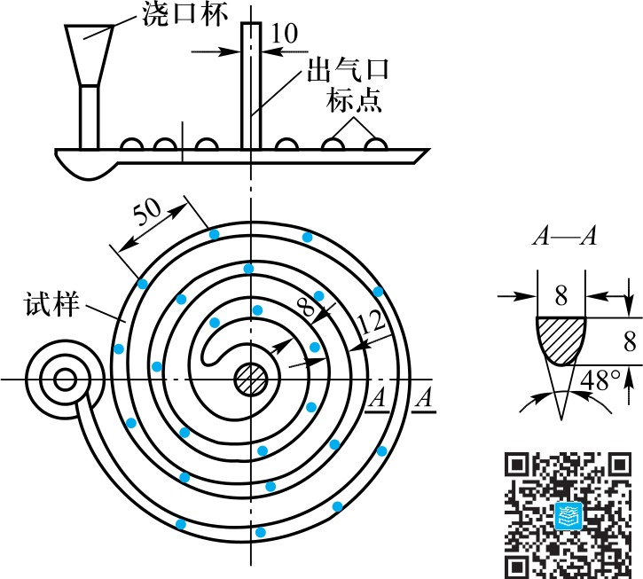
01/理论基础
(1) 合金成分：纯金属和共晶成分合金在恒温凝固，界面光滑→阻力小→流动性好。
宽凝固温度范围的合金：发达的树枝晶阻碍流动→流动性差。凝固温度范围越宽，流动性越差。
铁碳合金中：共晶成分铸铁流动性最好。越靠近共晶成分，流动性越好。
01/理论基础
左图：恒温凝固（纯金属/共晶）→界面光滑→流动性好
右图：宽凝固范围→树枝晶阻碍→流动性差
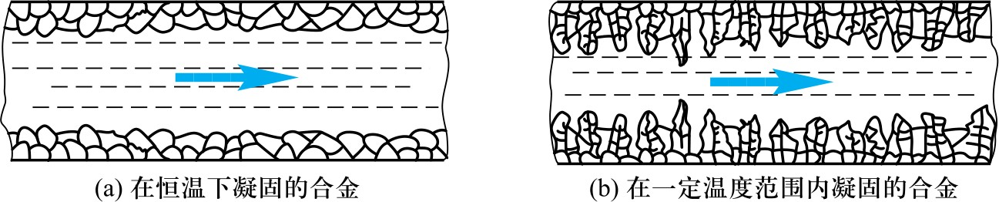
01/理论基础
纯铁流动性好，随碳含量增加流动性先下降后上升
共晶成分铸铁流动性最好，亚共晶铸铁随含碳增加流动性改善
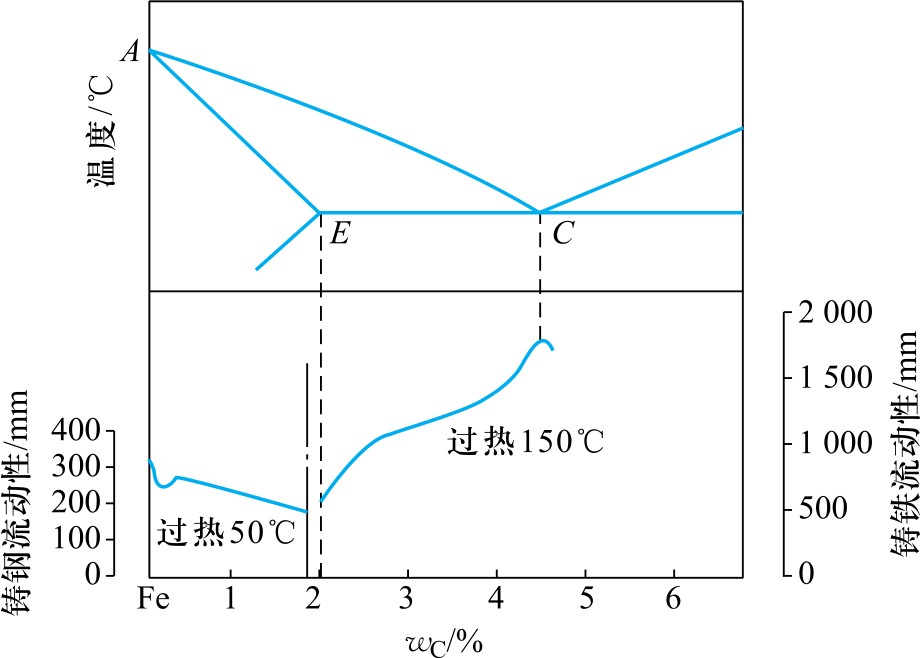
01/理论基础
(2) 物理性质：比热容和密度越大、导热系数越小、结晶潜热越多→流动性越好；黏度越小→流动性越好。
(3) 合金温度：温度升高→流动性上升。但温度过高→氧化、吸气严重→气孔、缩松等缺陷。
因此，浇注温度必须合理，并非越高越好。
01/理论基础
充型能力：液态合金充满铸型型腔，获得形状完整、轮廓清晰的铸件的能力。
充型能力不足 → 浇不足、冷隔等缺陷。
充型能力取决于合金本身的流动性和工艺因素。
01/理论基础
(1) 铸型条件：蓄热能力大→冷却快→充型能力差；排气差→气体压力增加→阻碍充型；铸型温度高→充型能力好。
(2) 浇注条件：浇注系统越复杂→阻力越大→充型差；静压力越大→充型越好。
提高浇注温度能显著提高充型能力。铸铁件常采用"高温出炉、低温浇注"。
Shrinkage of Casting Alloys
02/收缩
合金从液态冷却至室温的过程中，体积或尺寸缩小的现象称为收缩。
收缩是产生缩孔、缩松、热应力、变形及裂纹等铸造缺陷的基本原因。
三个收缩阶段：液态收缩 → 凝固收缩 → 固态收缩
02/收缩
(1) 液态收缩：浇注温度→液相线温度。型腔内液面降低。
(2) 凝固收缩：液相线→固相线。凝固温度范围越大，收缩越大。液态收缩+凝固收缩 → 缩孔和缩松的形成原因。
(3) 固态收缩：固相线→室温。外形尺寸减小（线收缩）。→ 应力、变形和裂纹的基本原因。
灰铸铁：体收缩率约7%，线收缩率0.7%~1.0%；铸钢：体收缩率约12%，线收缩率1.5%~2.0%。
02/收缩
合金的液态收缩和凝固收缩使铸件最后凝固部位出现孔洞：
缩孔：容积较大而集中的孔洞，外形近于倒锥形，内表面不光滑。
缩松：细小而分散的孔洞，分布于轴线区域或厚大断面，对力学性能影响很大。
02/收缩
纯金属/共晶合金→逐层凝固→形成集中缩孔。缩孔较易检查和修补。
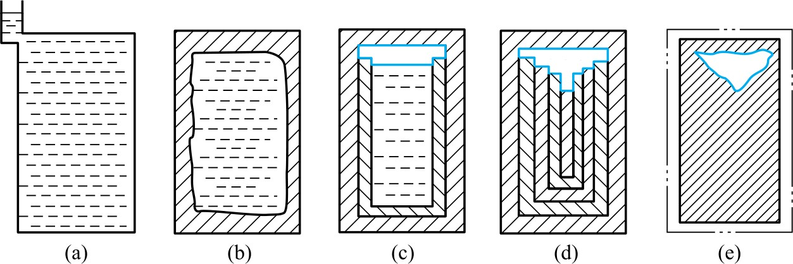
02/收缩
宽凝固范围合金→同时凝固→树枝晶分隔液体→形成缩松。缩松难于控制。
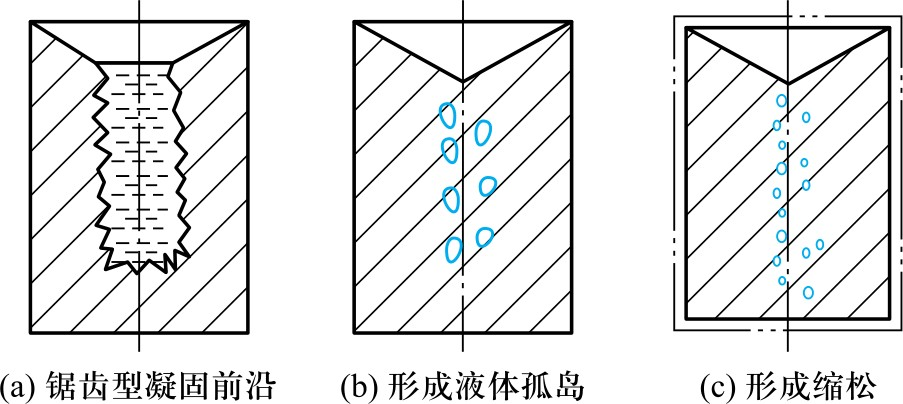
02/收缩
① 纯金属/共晶合金→缩孔；宽凝固范围合金→缩松。从收缩角度，应选近共晶成分合金。
② 给定成分铸件：缩孔+缩松总容积一定。增大冷却速度可促进缩松→缩孔转化。
③ 合金液态收缩+凝固收缩越大，缩孔体积越大。
④ 浇注温度越高→液态收缩越大→缩孔体积越大。
⑤ 缩孔和缩松总存在于铸件最后凝固部位，厚壁处易出现。
02/收缩
通过设置冒口和冷铁，实现顺序凝固：铸件从远离冒口处开始凝固，逐渐向冒口推进，冒口最后凝固。
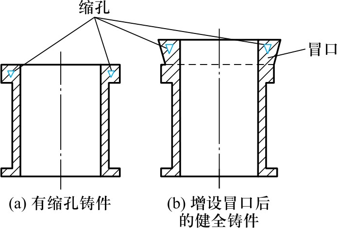
02/收缩
合理选择内浇道引入位置、开设冒口、放置冷铁。常采用发热保温冒口提高补缩效果。
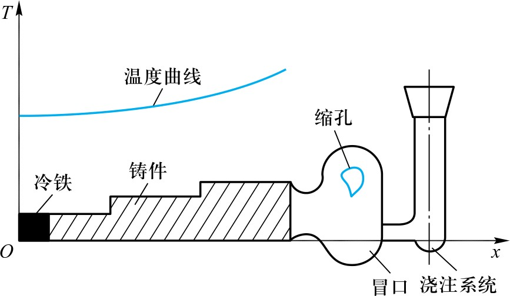
02/收缩
顺序凝固原则：设置冒口和冷铁，使铸件从远离冒口处开始凝固，冒口最后凝固 → 缩孔转移到冒口中 → 切除冒口。
确定缩孔位置的方法：凝固等温线法、内切圆法、计算机凝固模拟法（可准确预测和优化工艺）。
Internal Stress & Deformation
03/内应力
铸件因壁厚不均、冷却速度不同→各部分收缩量不同→彼此制约产生应力。
从凝固终了温度到再结晶温度 → 塑性状态 → 小外力即可塑性变形，应力可自行消除。
低于再结晶温度 → 弹性状态 → 受力产生弹性变形，应力保留。
03/内应力
结论：固态收缩使铸件厚壁或心部受拉伸，薄壁或表层受压缩。
合金固态收缩率越大、壁厚差别越大、形状越复杂→热应力越大。
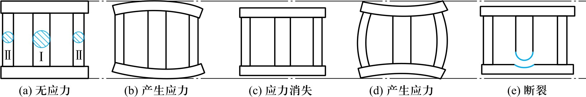
03/内应力
机械应力：铸件收缩受到铸型、型芯及浇注系统的机械阻碍而产生。落砂后可自行消除，但在铸型中与热应力共同作用增加裂纹可能性。
铸件存在内应力时处于不稳定状态，厚部受拉、薄部受压，通过变形减缓内应力。
03/内应力
导轨（厚）受拉，床壁（薄）受压→导轨向下挠曲变形。
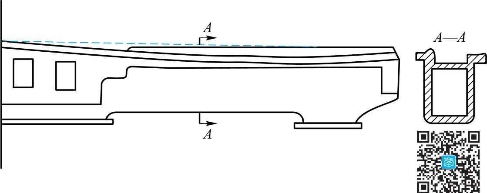
03/内应力
① 同时凝固原则：使铸件各部分同时凝固，无温差或温差尽量小→内应力小。适用于灰铸铁、壁厚均匀、致密性要求不高的铸件。
② 反变形法：将模样制成与变形方向相反的形状。
③ 去应力退火/自然时效：重要精密铸件须消除残余应力。
03/内应力
热裂：凝固后期高温形成，裂纹短、形状曲折、沿晶界。常见于铸钢和铝合金。防止：改善型砂退让性、限制硫含量。
冷裂：低温形成，裂缝细小呈直线状。出现在受拉伸部位和应力集中处。防止：减少内应力、降低合金脆性、控制磷含量。
Sand Casting
04/砂型铸造
零件图→铸件图及模样图→制模样→造型→合箱→浇注→落砂→清理→检验→铸件。
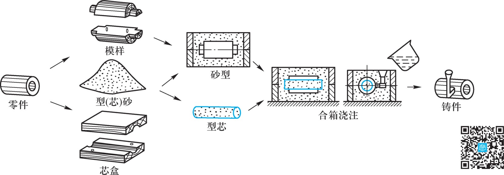
04/砂型铸造
大批量生产：型砂处理、造型、制芯、合箱、浇注、落砂全部机械化。
缺点：一个砂型只用一次，每吨合格铸件需4~5吨型砂，砂尘污染。
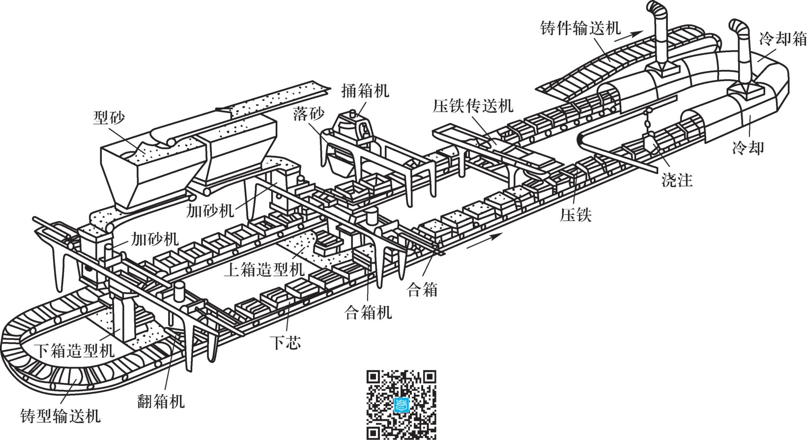
04/砂型铸造
手工造型：整模、分模、挖砂、活块、三箱、刮板、假箱造型、地坑造型。灵活、适应性强，但生产率低、劳动强度大。
机器造型：紧砂方法（振压紧实、抛砂紧实、射砂紧实）；起模方法（顶箱、漏模、翻转起模）。精度高、生产率高。
04/砂型铸造
顶箱起模：结构简单、型腔浅的铸型；漏模起模：型腔较深；翻转起模：形状复杂、型腔深。
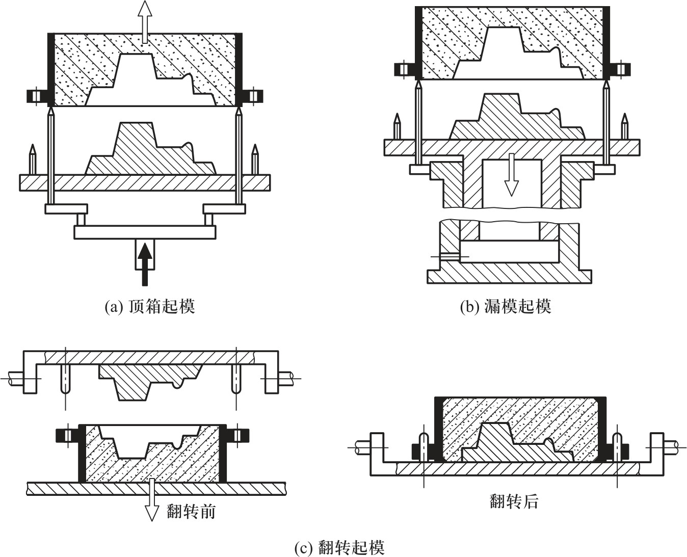
04/砂型铸造
熔炼：提供化学成分和温度合格的液态金属。
浇注温度应尽可能低→减少气体溶解量及液态收缩。
出炉温度应尽可能高→利于熔渣上浮→减少夹杂物。
落砂：应及时落砂，过早→白口组织，过晚→收缩应力致裂。
清理：清除黏砂、型砂及多余金属（浇冒口、氧化皮）。检验后去应力退火或自然时效。
Casting Process Design
05/工艺图
浇注位置：浇注时铸件在铸型内的空间位置，对铸件质量影响很大。
① 质量要求高的表面或主要加工面 → 放在下面。
② 需补缩的厚壁部分 → 放在上部或侧面（便于放置冒口）。
③ 大面积的薄壁部分 → 放在下部，立放或倾斜浇注。
④ 大平面 → 放在下面（防止夹砂等缺陷）。
05/工艺图
质量要求较高的轮齿应置于铸型下面。
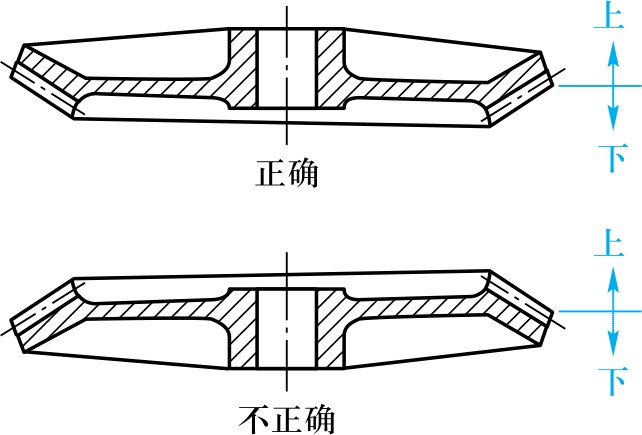
05/工艺图
右图合理：大面积薄壁部分在下面→较高压力下充满铸型。
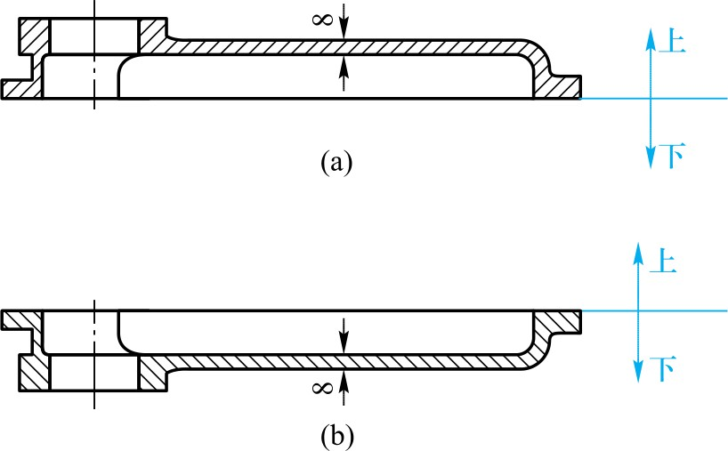
05/工艺图
① 选在铸件最大截面上，力求平面→顺利取模，简化造型。
② 尽量减少分型面数量→最好一个分型面，便于两箱造型。
③ 减少活块和型芯数量→简化制模和造型。
④ 铸件大部分或全部放在一个砂箱内→重要加工面在下型。
05/工艺图
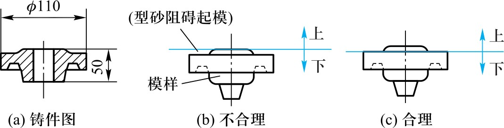
05/工艺图
左图正确：铸件全部放在下型，避免错箱。
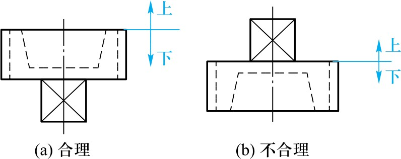
05/工艺图
(1) 铸造收缩率：灰铸铁0.7%~1.0%，铸钢1.6%~2.0%，非铁合金1.0%~1.5%。
(2) 机械加工余量：铸铁件3~15mm，机器造型余量小、手工造型余量大。
(3) 起模斜度：垂直于分型面的加工表面，斜度15'~3°。
(4) 铸造圆角：避免尖角处裂纹和应力集中，内圆角≈壁厚1/92。
05/工艺图
α、β、γ为不同侧面的起模斜度，a、b、c为机械加工余量。
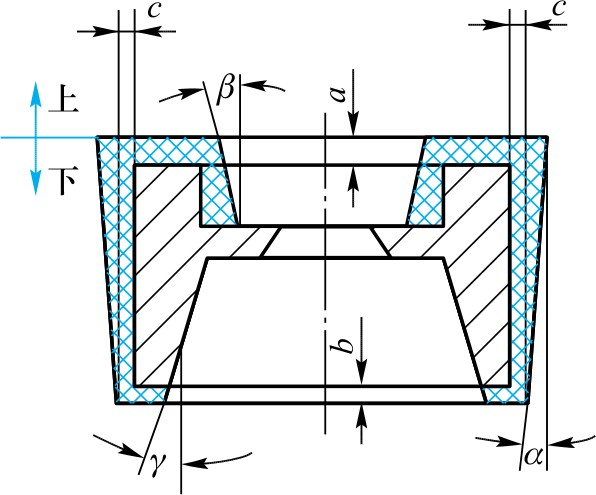
05/工艺图
铸件最明显的特征结构就是铸造圆角。
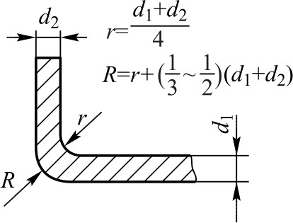
05/工艺图
芯头：伸出铸件外不与金属接触的型芯部分，用于定位、支承和固定型芯。
需有合适的芯头长度、斜度和装配间隙。
最小铸出孔：大量生产灰铸铁件12~15mm，单件小批30~50mm。较大孔应铸出以节约金属和工时。
05/工艺图
铸造工艺图：指导模样设计、生产准备、铸型制造和铸件检验的基本技术文件。
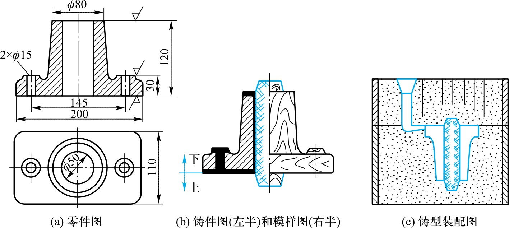
Special Casting Methods
06/特种铸造
用蜡料制模样→涂覆多层耐火材料→硬化干燥→熔去蜡模→获得型壳→焙烧→浇注。
工艺过程：压制蜡模→结壳（反复3~7次，5~10mm）→脱蜡→焙烧（850~950°C）→造型浇注。
06/特种铸造
精度高（IT14~IT11），Ra 12.5~1.6μm，最小孔径0.5mm，最小壁厚0.3mm。
适用于形状复杂、精度要求高的小型件：涡轮叶片、高速钢刀具。
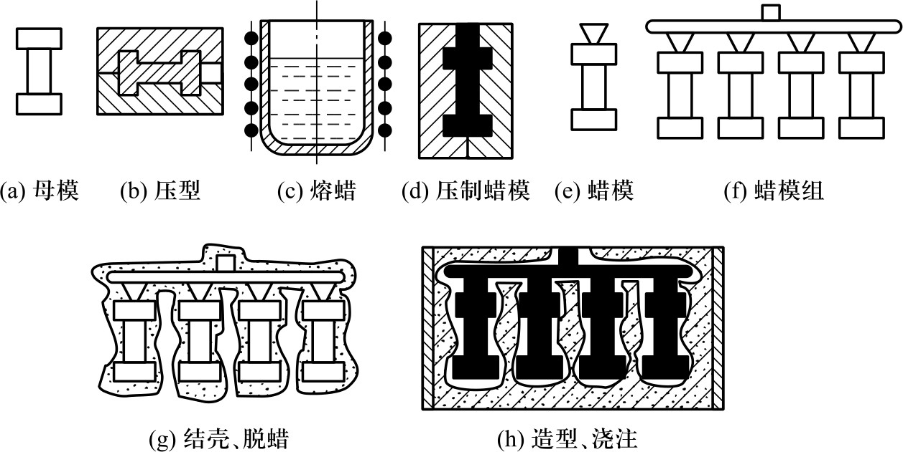
06/特种铸造
将金属液浇入金属制成的铸型型腔中，获得铸件的方法。金属型可反复使用（"一型多铸"）。
措施：预热金属型、加强排气、喷刷涂料、尽早开型、合理设计壁厚（>15mm防白口）。
06/特种铸造
竖直分型和复合分型最常用。铸件力学性能高，铝合金提高约20%抗拉强度。
适用于大批量非铁金属铸件：铝活塞、气缸体、缸盖、铜合金轴瓦。
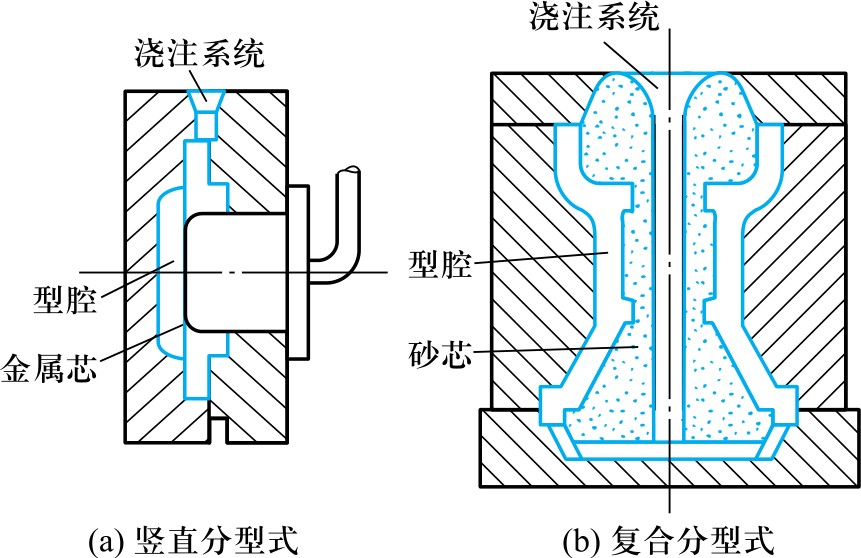
06/特种铸造
在高压作用下，液态/半固态金属以高速充填铸型型腔，在压力下凝固。
两大特点：高压 + 高速充型。压铸机分热压室式和冷压室式。
06/特种铸造
定型和动型合型→注入压室→压射活塞推进→高压充型凝固→开型→顶出铸件。
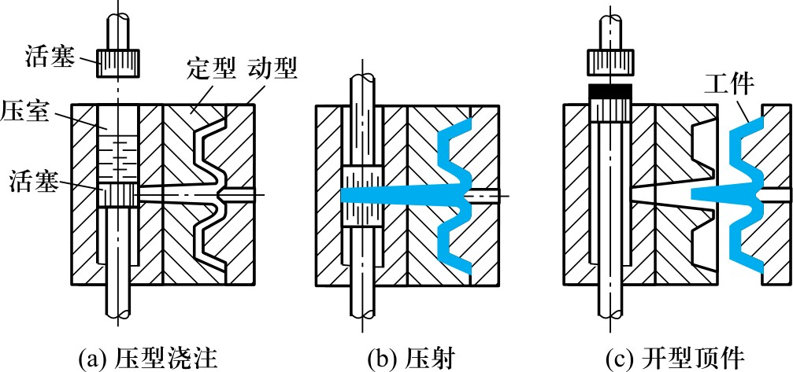
06/特种铸造
优点：精度IT13~IT11，Ra 3.2~0.8μm；强度高（比砂型提高25%~30%）；可压薄壁件（最小0.5mm）；生产效率最高（班产600~700件）。
缺点：设备投资大；高熔点合金模具寿命低；因高速充型卷气→气孔→不能热处理/多余量加工。
适用于低熔点非铁金属中小型件：气缸体、变速箱体、照相机壳体。
06/特种铸造
将液态金属浇入高速旋转铸型中，在离心力作用下填充铸型并凝固成形。
立式（绕竖直轴旋转）和卧式（绕水平轴旋转）两类。
06/特种铸造
优点：省去型芯/浇注系统/冒口；组织致密无缩孔/气孔；可铸双金属件。
缺点：内表面质量差，孔尺寸不易控制。
应用：灰铸铁及球墨铸铁管、气缸套、滑动轴承。
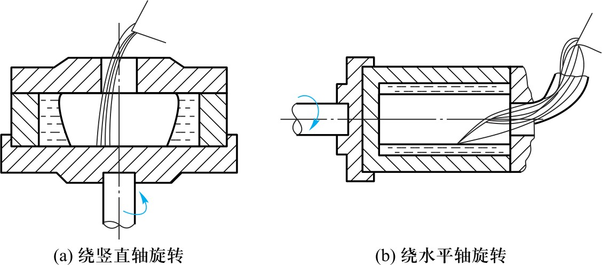
06/特种铸造
在压差作用下，液体金属充填到预先有压力的铸型型腔中，结晶凝固获得铸件。
增压法：型腔预建压力p₁→坩埚加压至p₂>p₁→金属液沿升液管充型。
减压法：坩埚与型腔压力相等p₃→型腔减压至p₄ 特点：充型平稳、铸件致密、可铸0.5mm薄壁件。
06/特种铸造
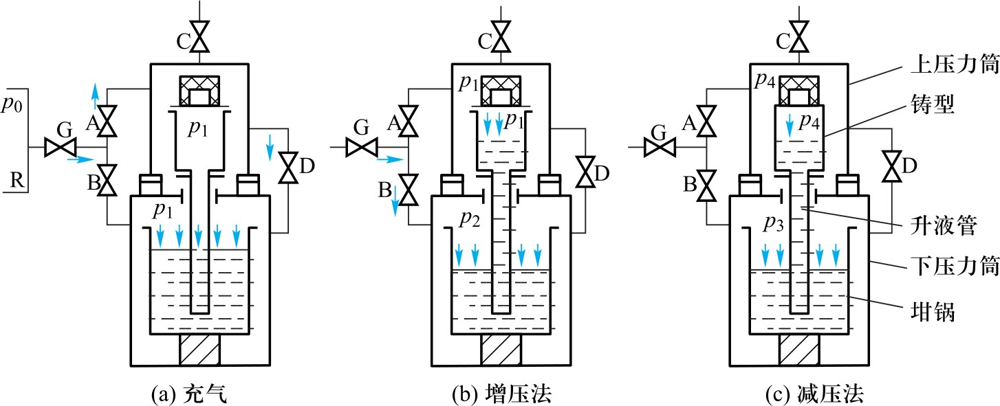
06/特种铸造
对定量液态金属施加机械压力，使其成形凝固。介于铸造与锻造之间。
特点：无浇注系统、吸气少、组织致密、力学性能接近锻件。适用于多种合金和复合材料。
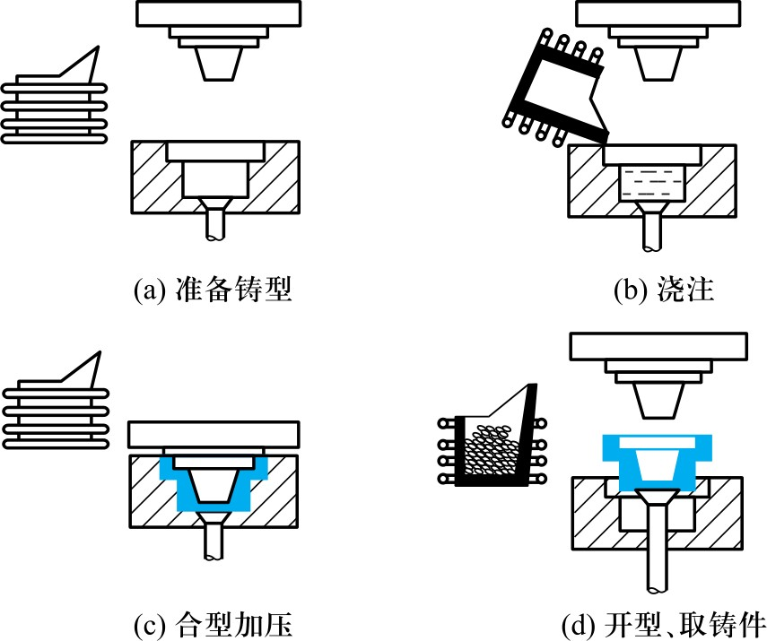
06/特种铸造
聚苯乙烯泡沫塑料模样代替普通模样→填干砂振实→抽真空→浇注（模样汽化消失）→冷却→铸件。
优点：无分型面、不用型芯、精度高、成本低（模样成本为木模的1/92）。
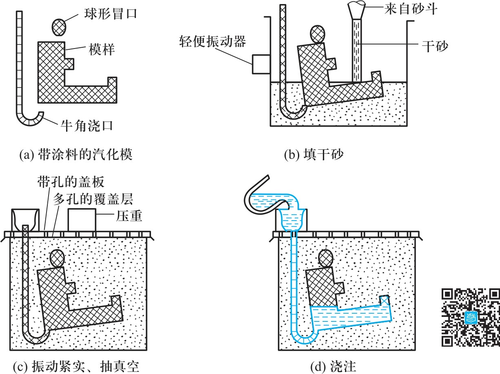
06/特种铸造
泡沫塑料汽化模+磁丸（铁丸）→通电→磁丸固结成铸型→浇注→凝固后断电→磁丸松散→取出铸件。
特点：无黏结剂、透气性好、冷却速度快3倍、组织细密。
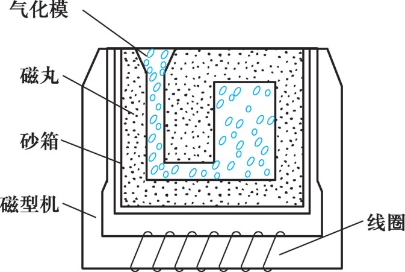
06/特种铸造
压缩空气突然释放或燃气爆炸冲击波使型砂紧实。紧实时间<0.1s，一个铸型约0.5s。
紧实度高且均匀，铸件精度高，无振击噪声。
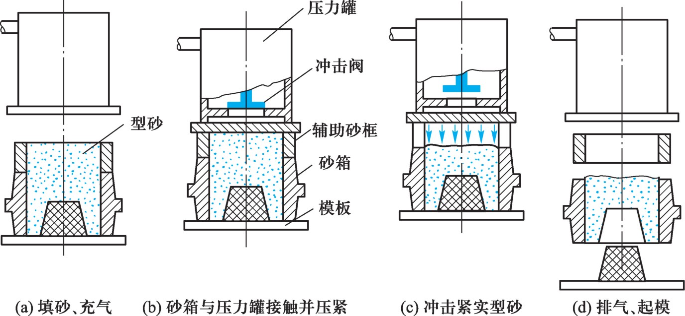
06/特种铸造
① 绿色集约化：低消耗、无废弃物、环境宜人、产品清洁。
② 专业化生产：规模经营、机械化、自动化、智能化。
③ 高性能化/精确化/轻质薄壁化：树脂砂、特种铸造、精炼技术、复合材料。
④ 计算机和机器人应用：CAD/CAE/CAPP/CAM集成、凝固模拟、微观组织模拟、智能决策、机器人操作。
Production of Common Alloy Castings
07/合金铸件
大多数灰铸铁用冲天炉熔炼；炉料：铸造生铁+回炉铁+废钢+铁合金+焦炭+熔剂。
因铸造性能优良→一般不需设冒口和冷铁→铸造工艺简化。
孕育处理：浇注前加硅铁（加入量0.25%~0.6%）→石墨细化、基体致密。
要求低碳低硅铁液 + 高出炉温度（1450~1470°C）。
07/合金铸件
化学成分严格：高碳（C=3.6%~4.0%），高硅，低硫（S<0.06%），低磷。
球化处理：稀土镁合金球化剂，加入量1.3%~1.8%，冲入法（浇包底部修堤坝）。
孕育处理：硅铁0.4%~1.0%，促进石墨球化、防止白口。
铸造特点：常设冒口和冷铁+使用干型增大铸型刚度→防止缩孔缩松；控制型砂水分防皮下气孔。
07/合金铸件
浇包底部修堤坝→球化剂埋入→盖以硅铁粉→先冲入1/3~1/2铁液→反应完毕扒渣→加余铁液→孕育→浇注。
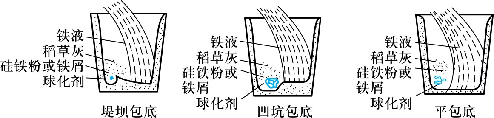
07/合金铸件
可锻铸铁：低碳低硅铁液→白口铸铁毛坯→高温(900~950°C)石墨化退火→团絮状石墨。流动性差→需注意冒口及冷铁。
蠕墨铸铁：铸造性能与灰铸铁相近，流动性更好。一般铸态使用，不热处理。蠕化剂用稀土硅铁，冲入法处理。
07/合金铸件
铸钢综合力学性能优于铸铁，强度高、塑性韧性好、焊接性好。但晶粒粗大、须正火或退火。
熔炼设备：三相电弧炉（最普遍）、感应电炉（发展快）、平炉（重型件）。
工艺特点：熔点高（~1500°C）、流动性差、收缩率大（~2%）。
型砂须好的透气性、耐火度、强度和退让性；遵循顺序凝固原则配置大冒口和冷铁。
应用：高压阀门壳体、轧钢机机架、坦克履带(ZGMn13)、水轮机叶轮等。
Casting Structure Design
08/结构设计
① 壁厚应适当：大于合金最小壁厚（防浇不足、冷隔），不宜过大（防晶粒粗大、缩松）。
可用T形、工字形、槽形截面或加强筋保证强度刚度。
② 壁厚应均匀：减小厚壁差别→防热节、缩孔、内应力、裂纹。内壁（冷却慢）应薄、外壁（冷却快）应厚。
08/结构设计
左图壁厚不均匀→厚大部位形成缩孔；右图壁厚均匀→避免缺陷。
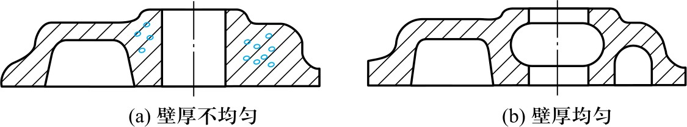
08/结构设计
③ 壁连接应合理：
• 结构圆角：避免直角→防金属聚集产生缩孔和应力集中。
• 过渡连接：避免锐角和交叉连接→防金属聚集。筋的连接：小型件交错连接，大型件环状连接。
08/结构设计
左图直角→内接圆大→金属聚集、应力集中；右图圆角→无聚集。
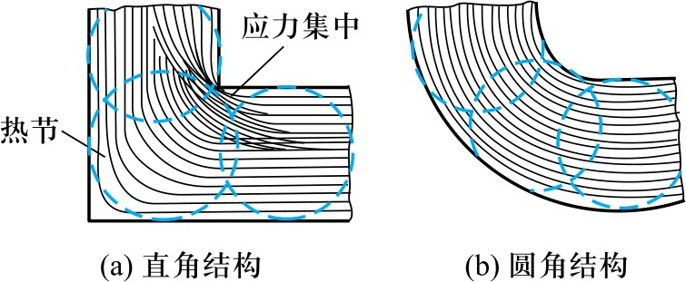
08/结构设计
a.交叉连接（不好） b.交错连接（小型件） c.环状连接（大型件）
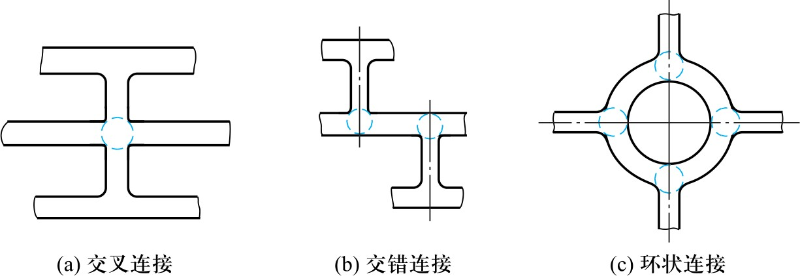
08/结构设计
a.锐角连接→金属聚集 b/c.大角度连接→改善金属分布。
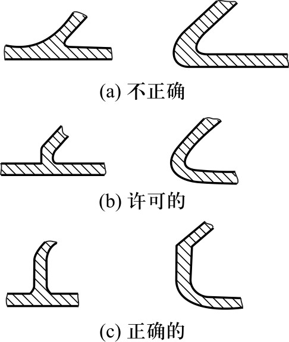
08/结构设计
圆角过渡、倾斜过渡、复合过渡→防止应力、变形和裂纹。
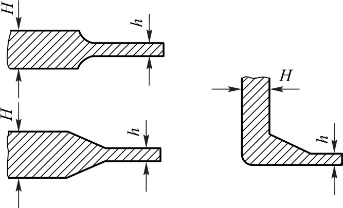
08/结构设计
④ 减少变形：细长件和大平板件→设计成对称结构或增设加强筋。
⑤ 减缓收缩受阻：使各部分能自由收缩。弯曲轮辐或奇数轮辐设计→减小内应力。
08/结构设计
a.工字梁对称结构 b.平板底面加加强筋。
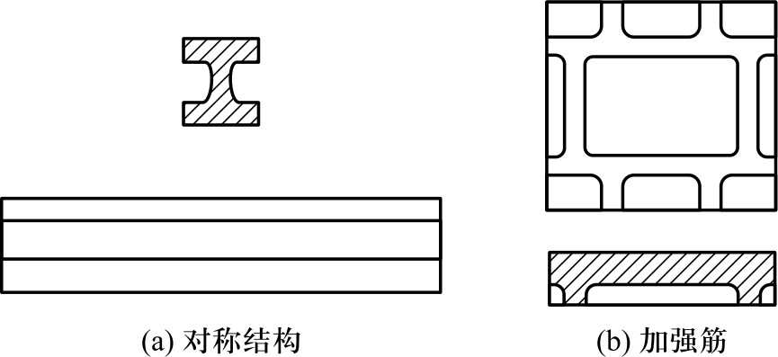
08/结构设计
弯曲轮辐或奇数轮辐→冷却时可自由收缩→减小铸造内应力。
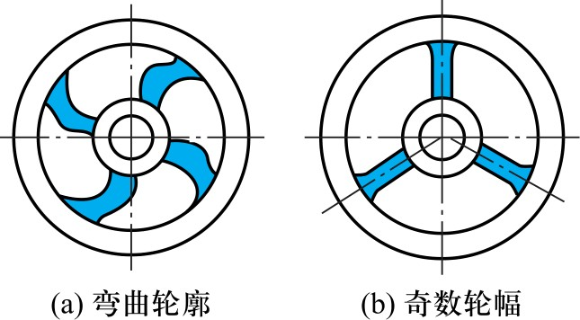
Process Requirements for Structure
09/工艺结构
外形设计：尽量简单，避免侧凹→便于起模。凸台和筋条应便于起模并尽量使分型面平直。
内腔设计：减少型芯数量、简化型芯形状→利于定位、固定、排气和清理。
09/工艺结构
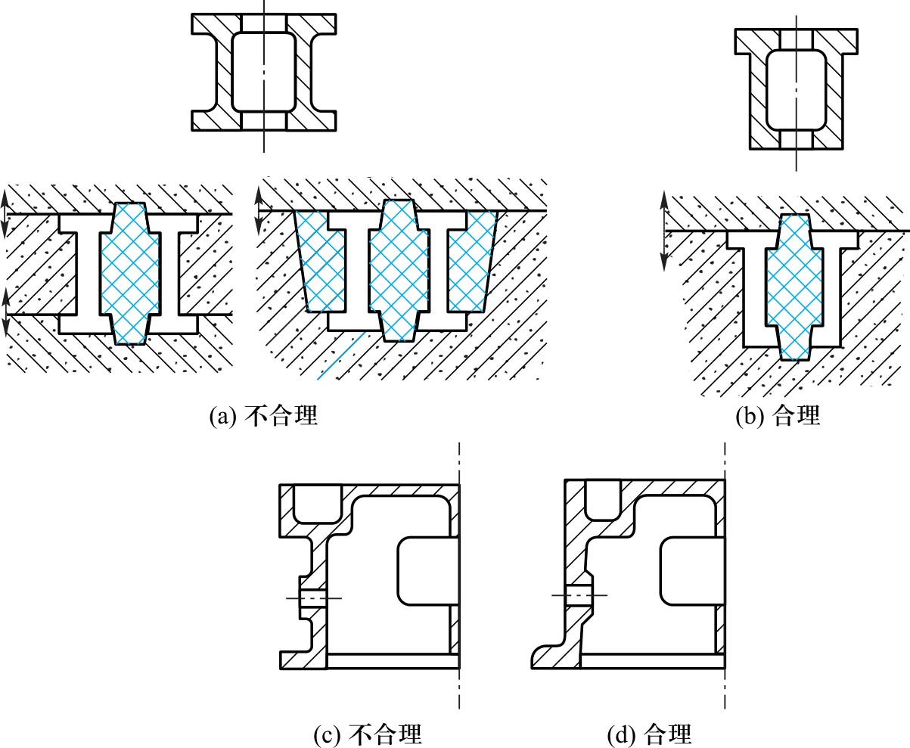
09/工艺结构
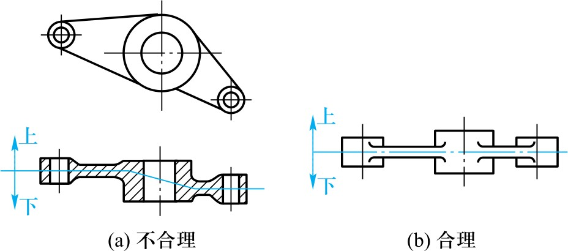
09/工艺结构
减少型芯数量，简化工艺。
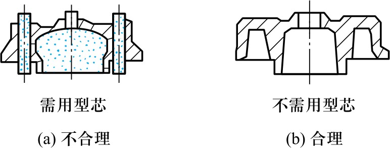
09/工艺结构
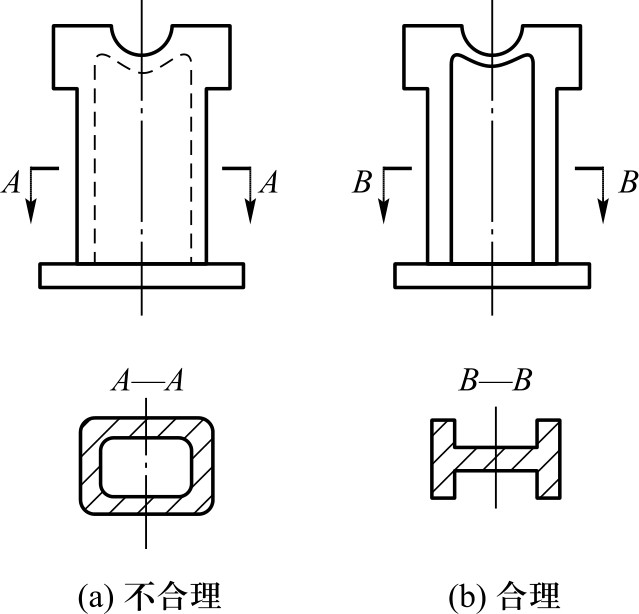
09/工艺结构
铸件上垂直于分型面不加工表面应设计结构斜度。
优点：起模方便、零件更美观、有斜度的内腔可用砂垛代替型芯。
垂直于分型面不加工表面高度越低，结构斜度应越大。
总结
砂型铸造：适应性强、生产准备简单，但精度低、表面粗糙、一型只一次。
熔模铸造：精度IT14~IT11，Ra 1.6~12.5μm，小型精密件。
金属型铸造：一型多铸，精度IT16~IT12，Ra 6.3~12.5μm，大批量非铁金属。
压力铸造：精度IT13~IT11，Ra 0.8~3.2μm，效率最高，大批量低熔点合金。
离心铸造：中空筒类管类件，无型芯无浇冒口，组织致密。
总结
顺序凝固：远离冒口处先凝→冒口最后凝→缩孔转移到冒口。适用于收缩大、致密性要求高的铸钢件等。
同时凝固：各部分无温差同时凝→内应力小。适用于灰铸铁、壁厚均匀、致密性要求不高的铸件。
铸铁"高温出炉、低温浇注"：高温出炉→去气去渣；低温浇注→减少液态收缩和气体溶解。
总结
① 合金流动性：纯金属/共晶成分→恒温凝固→流动性好。铸铁选近共晶成分。
② 收缩三阶段：液态收缩+凝固收缩→缩孔缩松；固态收缩→应力/变形/裂纹。
③ 防止缩孔：顺序凝固+冒口+冷铁。防止变形：同时凝固+反变形法+去应力退火。
④ 铸造工艺参数：收缩率、加工余量、起模斜度、铸造圆角。
⑤ 特种铸造：熔模、金属型、压力、离心、反压、挤压、实型、磁型、气冲。各有所长。
⑥ 铸铁件：灰铸铁（冲天炉）、球墨铸铁（球化+孕育，冲入法）、可锻铸铁（退火）、蠕墨铸铁（蠕化）。
⑦ 铸件结构：壁厚均匀、结构圆角、减缓收缩受阻、便于起模。